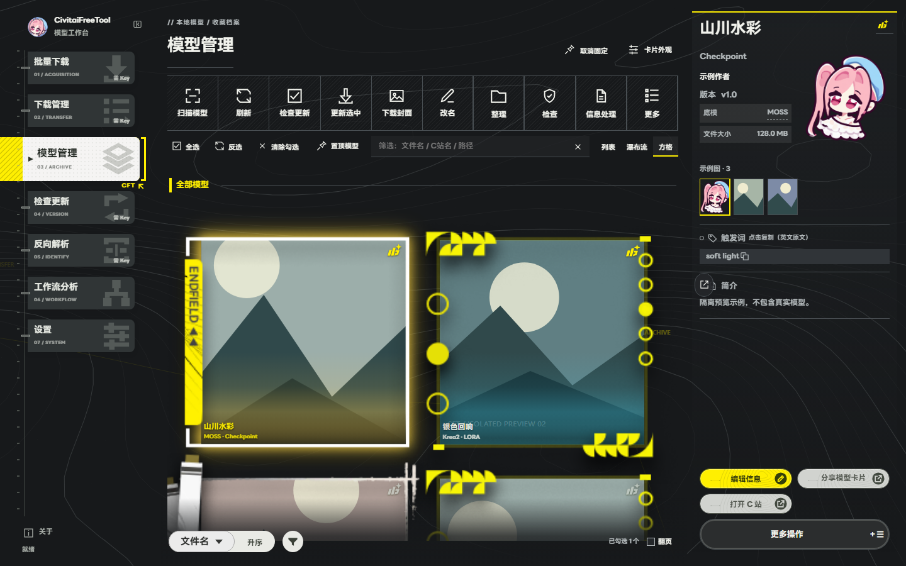
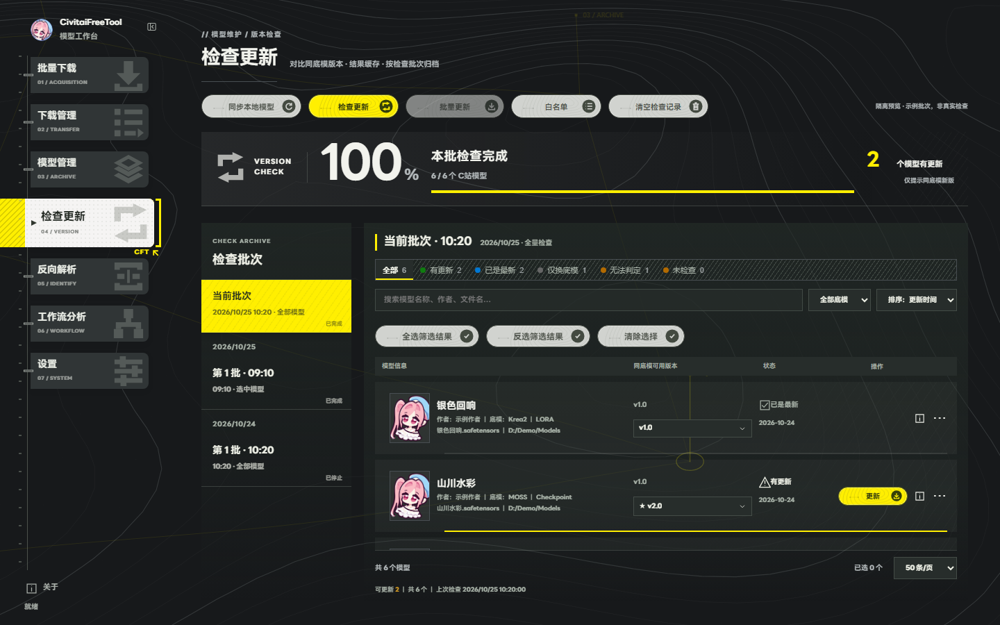
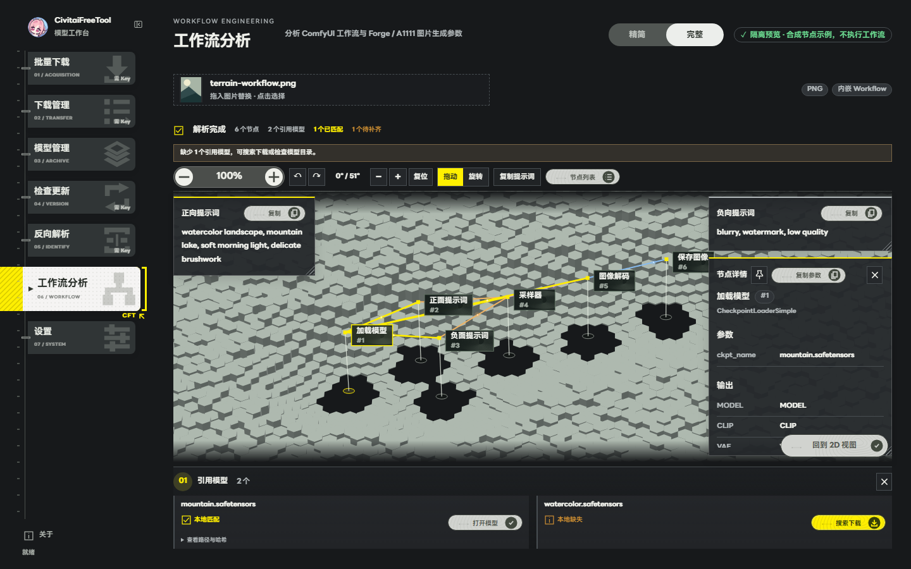

收集。传输。归档。
批量提交链接、确认文件与目录；任务完成后自动归入历史。用瀑布流、方格或列表，重新认识你的本地收藏。
LOCAL MODEL WORKBENCH
WINDOWS 10 / 11 — FREE TO USE



01 / THE COLLECTION
从浏览器里的一个链接，到本地目录里的每一个模型。
把常用的步骤连起来，把反复的操作省下来。
批量提交链接、确认文件与目录；任务完成后自动归入历史。用瀑布流、方格或列表，重新认识你的本地收藏。
按底模比较可用版本，按日期与批次保留检查结果。
通过文件哈希反查来源，补充名称、封面、简介与触发词。
读取可解析的工作流、提示词与模型引用，不凭空补全丢失的数据。
亮暗主题、卡片外观、字体回退、快捷键和性能独立设置。
02 / BEHIND THE IMAGE
拖入包含生成数据的图片，拆开它的工作流。
用 3D 沙盘浏览节点关系，或切回熟悉的 2D 连线视图。提示词、节点参数与引用模型，各有自己的位置。
原始信息，独立查看。复制提示词，固定节点详情，查看本地缺失模型。
只读分析，不运行工作流。2D 排布不写回原图；已被剥离的数据无法恢复。
03 / MAKE IT YOURS
四档性能设置，从完整动效到静态工作台。
非前台降低背景占用，隐藏或最小化暂停视觉动效，下载照常进行。
完整动效
跟随屏幕刷新调度
保留动效
背景上限 60 FPS
降低背景负担
背景上限 30 FPS
静态外观
关闭界面动画
实际帧率取决于设备、屏幕与 WebView，不保证达到上限。GPU 默认不禁用。
04 / YOUR NEXT WORKBENCH
WINDOWS / v3.0.19解压即用，无需安装向导。
更新前退出旧版，替换 EXE，保留原配置与任务。
当前文档版本 3.0.19 · Windows 10 / 11 · WebView2
当前模型页一键提交，多个模型标签页批量发送。
使用前，先启动 Windows 版 CFT。
Chrome / Edge 解压加载。Firefox 附件未签名，仅支持临时加载，重启需重新载入。
05 / FIRST RUN
加入现有文件夹并扫描。
不移动、不重新下载已有模型。
引导可以跳过；联网查询和下载
仍需满足来源网站的访问要求。
粘贴链接，或从扩展发送。
确认保存位置，在队列查看实际进度。
06 / GOOD TO KNOW
不能。分析依赖文件中保留的元数据、工作流及支持的节点。被剥离的数据或无法还原的外部动态输出不会被虚构。
仅将你选择的模型链接提交给本机 127.0.0.1:47531，不发送 Cookie、API Key 或网页正文。“已提交”表示软件接收链接，不表示下载已完成。
目前有十语言预览，覆盖新手引导和导航；设置及其他页面仍在翻译，不是完整多语言版本。
前往 GitHub Issues ↗，附版本、操作步骤与脱敏日志。不要上传 API Key、代理凭据、用户配置或私人路径。